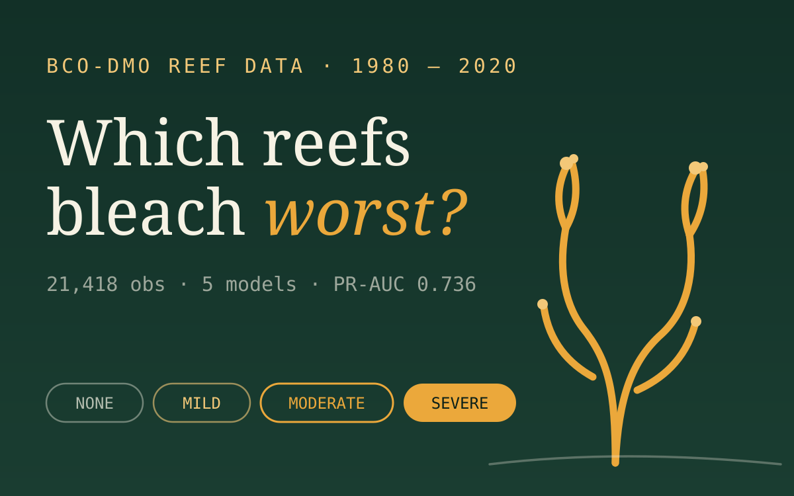

01The problem
Coral bleaching events are getting more frequent and more severe, but monitoring capacity is finite - reef managers need to know which reefs are most at risk before committing survey resources. The harmonised BCO-DMO global reef dataset spans seven monitoring programs from 1980 to 2020, with bleaching severity recorded in four ordinal classes.
The task: predict that severity class from environmental and structural reef features, with special attention to the actionable early-warning class - the one a manager would actually act on.

02Data discipline first
Seven monitoring programs merged into one dataset means seven different collection habits merged into one set of biases. The cleaning stage did the heavy lifting:
- Dropped columns with over 50% missing data, and removed incomplete rows rather than imputing them - protecting label integrity at the cost of volume
- Eliminated 11,000 exact duplicate records - about 37% of the raw data - that would otherwise leak between train and test folds
- Landed on a clean 21,418-observation, 20-feature dataset
- Maintained two parallel encodings: label encoding for tree models, one-hot (expanding to roughly 132 features) for neural networks - matching each model family's representational assumptions
03Five models, one fair fight
XGBoost, Random Forest, Logistic Regression, and shallow and deep MLPs - all trained under stratified k-fold cross-validation with up to 100 runs per configuration, and features scaled within each fold to prevent leakage. Class imbalance was handled methodically, not reflexively:
- SMOTE applied inside the training split only - and tested with and without, to isolate its actual effect
- Focal loss used for the neural networks instead of oversampling
- Both quantified: SMOTE degraded Logistic Regression by 12.6%, and focal loss cut MLP accuracy by up to 16% - imbalance fixes are not free
04The ablation that mattered
Temperature is the intuitive villain in bleaching stories. The ablation study said otherwise: reef-structural features - exposure, depth, turbidity - contributed roughly 70% of the performance gain over temperature-only models.
That's a result with direct scientific and operational meaning: two reefs in the same thermal regime can face very different risk, and monitoring programs that only track temperature are leaving most of the predictive signal on the table.
05From notebook to operations
A model that lives in a notebook protects zero reefs, so the project closed with a deployment design:
Weekly ingestion
Sensor CSVs land on a schedule and are validated against the training schema.
Scoring
XGBoost scores each reef on a web server and emits a binary risk flag - severity collapsed to the decision a manager actually makes.
Field validation
Survey teams confirm or reject flags, and their feedback flows back as new labelled data.
Periodic retraining
The model refreshes on the growing dataset. XGBoost earns the production slot on speed, interpretable feature importance, and reliability - not just AUC.
06Limitations
Seven programs, seven biases
Monitoring programs differ in method, geography and effort. Harmonisation aligns the columns; it can't fully align the collection biases underneath them.
Removing rows trades volume for integrity
Dropping incomplete rows instead of imputing protects labels but may under-represent the sparse regions and programs that report least completely.
Ordinal classes, nominal loss
Severity classes are ordered, but multiclass training treats a Severe-vs-None error the same as Severe-vs-Moderate. The PR-AUC on the early-warning class is the honest headline for that reason.
Predictive ≠ causal
Structure features carrying 70% of the signal makes them excellent predictors - it does not make turbidity a lever you can pull to stop bleaching.
07What it taught me
37% of the raw data was exact duplicates. The most consequential modelling decision in the whole project happened before any model existed.
Test the fix, not the folklore. SMOTE helped trees and hurt logistic regression by double digits - the same intervention, opposite effects.
The 70%-structural finding turned a leaderboard exercise into a scientific claim. Ablations are how a model earns the right to an opinion.
Choosing the deployment model on speed, interpretability and reliability - with AUC as only one input - is the difference between a submission and a system.